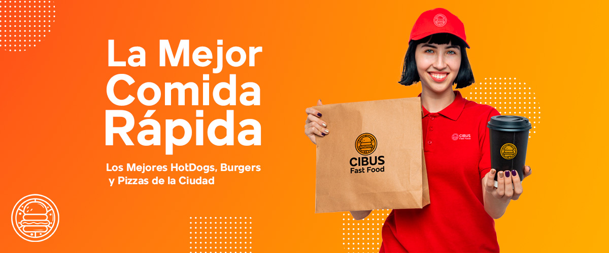

La hamburguesa es uno de los platos más socorridos, ya que son fáciles de hacer y que gusta a todo el mundo, sobre todo, a los más pequeños. Además, es un plato que se puede adaptar a todas las preferencias y con muchas posibilidades a la hora de elegir los ingredientes.
Leer Mas
La cadena de alimentación McDonald's ha lanzado en 60 restaurantes del Reino Unido un nuevo producto: la triple cheeseburger.Si las ventas de este producto funcionan, McDonald's extendería su distribución por el resto de restaurantes de la cadena en Gran Bretaña.
Leer Mas
La pizza es uno de esos bocados a los que pocos se resisten. Si bien es cierto que la piña es el único ingrediente que puede lograr que un auténtico amante de este manjar se niegue a darle un bocado, también lo es que, quien sabe apreciarlo bien, no se conforma con disfrutarlo prefabricado.
Leer Mas
Llega Halloween y las ideas para decorar la casa o para hacer una comida o cena especial en esta festividad son innumerables. Una muy buena idea son las mini pizzas que proponen desde Mercadona.
Leer Mas
¿Quién no ha tenido un día en el que parece que todo va mal? A veces hay que darse un tiempo para ver las cosas desde otra perspectiva o simplemente pedir una pizza para levantar el ánimo.
Leer Mas
Matthew ‘Megasapo’ Stonie devoró 62 perros calientes en 10 minutos durante el Concurso Internacional de Comer Hot Dogs de Nathan’s Famous este sábado en Nueva York y arrebató el cinturón amarillo mostaza y el título al campeón, quien comió 60.
Leer Mas